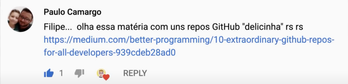
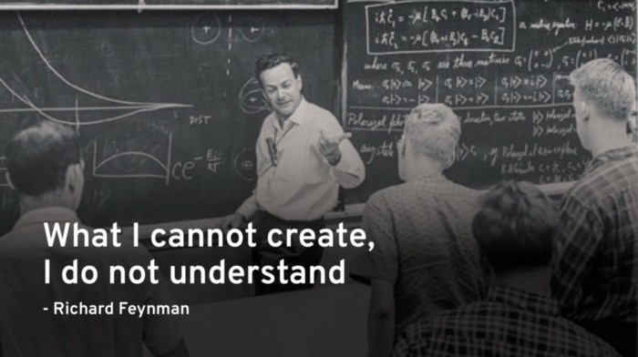

O massa é que essa lista foi indicação de um queridão seguidor do meu canal do YouTube chamado Paulo Camargo, então muito obrigado Paulo!
E de fato são repositórios muito "delicinha" e essa matéria/artigo foi escrito pelo Simon Holdorf. Então agora partiu destacar o que tem de mais legal nesse artigo começando pelo:
Repositório #1: Construa suas próprias coisas
https://github.com/danistefanovic/build-your-own-x
O nome original desse repositório é “Build Your Own X” e isso significa “Construa o seu próprio X”, onde o X significa coisas como o seu próprio sistema operacional como eu comentei antes, mas tem muitas outras coisas legais e mais acessíveis que eu vou falar sobre mais para frente, mas eu quero antes dar destaque pra uma imagem sen-sa-ci-o-nal que colocaram no topo do repositório:
É uma imagem com uma frase escrita pelo físico Richard Feynman onde ele diz que “O que eu não consigo criar, eu não entendo.”
Caaara! Ler essa frase acendeu um fogo interno dentro de mim em um nível inédito e isso foi muito especial porque naquele exato momento, eu estava justamente aprendendo a programar um dos itens desse repositório que é sobre construir o seu próprio renderizador 3D, mais especificamente o “Raycasting” que foi utilizado em jogos como “Wolfenstein 3D” e turma, é delicioso você digitar linhas de código que você compreende e que começam a montar imagens 3D na tela.
Então eu prometo para vocês que, assim que eu finalizar todos os meus estudos sobre esse assunto, eu vou construir a maior playlist de vídeos do mundo sobre Raycasting. Do mundo mesmo! Não vai ter pra gringo, não vai ter pra ninguém! Vai ser tudo feito em português e a didática que eu quero usar vai ser inédita. Eu quero desenvolver uma capacidade computacional dentro da sua cabeça que você vai olhar pra outros assuntos do dia a dia, tipo fazer uma rota de autenticação num serviço web, e vai pensar:
“Poxa, mas é só isso? Não da pra pôr um renderizador 3D aí no meio não?”
Não, não dá! Por favor não faça isso!
Mas se você tiver interesse em chegar nesse nível de vontade, se certifique de estar inscrito no meu canal do YouTube para quando eu anunciar essa série, fechado?
E voltando para o primeiro repositório, ele é bem simples e direto, então passando pela apresentação inicial e índice, os tópicos e os respectivos links começam a ser listados e temos, por exemplo, uma seção para Renderizadores 3D, construir o seu próprio client de BitTorrent ou Blockchain, ou emulador de Gameboy ou Mastersystem, ou seu próprio framework frontend (porque a gente tem poucos no mercado… COF!), seu próprio jogo em diversas linguagens (C, C++, C#, Go, Java, JavaScript, Lua, Python, Ruby, Rust), sua própria Rede Neural também em várias linguagens, engine para simulação física, sua própria linguagem de programação e compilador (baita tópico avançado), seu próprio editor de Texto e também tópicos não categorizados como um que é um vídeo sobre como fazer uma inteligência artificial para jogar Tetris em JavaScript.
Enfim, é muita coisa massa e com certeza esse repositório vai se tornar fonte de inspiração pra eu aprender tópicos avançados e depois compartilhar esse conhecimento em forma de vídeo no canal e artigos aqui no Medium.
E se você acredita estar muito cru para colocar a mão na massa e quer estudar um pouco mais não tem problema. É por isso que a gente tem o: